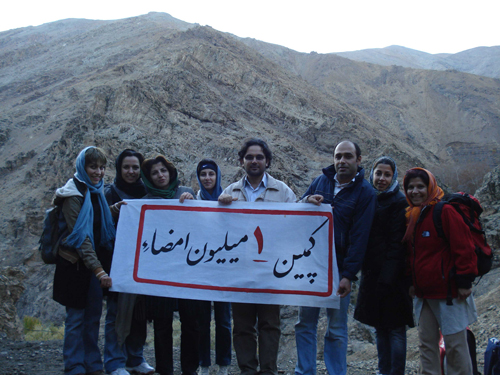

پذيرش > كوچه به كوچه > همه درد مشترکی داریم
 جمع آوری امضا به صورت گروهی جمع آوری امضا به صورت گروهی

 همه درد مشترکی داریم همه درد مشترکی داریم
29 آذر 1387 - جمشید آیین دار- امیر رشیدی- نفیسه آزاد- وجیهه تشکری - نسخه قابل چاپ
جمشید آیین دار
نه نام و نشانم را می داند نه نام و نشانش را می دانم. کیست و چکاره است ؟ از کجا می آید و به کجا می رود ؟ از او می خواهم با هم پیاده روی کنیم . با تعجب می پذیرد . از کمپین می گویم و حقوق برابر ، گوش می کند و به لبانم چشم می دوزد ...
من اگه امضا کنم مگه چیزی تغییر می کنه ؟ منم یه نفر مثه این همه آدم ، تصمیمم رو گرفتم آقا ، حرفامو با خودم زدم ، دروازه دلمو بستم ... نمی خوام ازدواج کنم ، می ترسم حقوقم پایمال شه هر چی باشه الان یه نیمچه آزادی دارم .
زبانم قفل شده ، به صدای رودخانه گوش میدم و یاد دختری که ده سال پیش فروخته شد می افتم ، همه چیز در چند ثانیه در ذهنم مرور می شود ، به او گفتم قطره های باران دیشب با هم جمع شدن و این رودخانه به حرکت در اومده ، ما همه درد مشترکی داریم که فقط این کاغذ و امضاهاش ما رو به هم پیوند میده ...
از دور بچه ها رو می بینم که دارن از یه گروه امضا می گیرن ، اونا رو نشون می دم ، می گم ببین تنها نیستی ، و از من خودکار می خواهد و دفتر چه و آدرس سایت.

امیر رشیدی
دیر شده بود. با عجله رفتم سمت مینی بوس ها، وقتی رسیدم به ابتدای راه کوه بچه ها رفته بودند بالا. خودم رو به اونها رسوندم و همراه شدم برای امضا جمع کردن.
به سمت زن و مرد جوانی رفتم. طبق معمول بعد از اجازه های معمول و معرفی خودم بیانیه رو دادم و براشون از کمپین گفتم. به حق اشتغال که رسید مرد با حالتی ناراحت گفت:
 من نمی خوام خانومم کار کنه. من نمی خوام خانومم کار کنه.
با شنیدن این کلمه خودم رو آماده کرده بودم که بعد از تموم شدن حرفهاش با اون صحبت کنم و نظرش رو تغییر بدم. آخه خیلی مثبت و خوب بر خورد کرد و اولین جمله اش این بود که من با همه حرفها شما موافقم. میخواستم بگم خوب تو که موافقی چرا این حرف رو میزنی که ادامه داد :
خانم من میره تو دفتر بسیج کار می کنه و من بهش می گم هر جا می خوای بری برو و کار کن ولی اونجا نه.
من که دیگه حرفی برای گفتن نداشتم و مونده بودم بگم کار خوبی می کنی یا نه، امضا رو گرفتم و از اونها خداحافظی کردم و رفتم. اون روز این دو نفر رو بارها و بارها دیدم.
صحنه فوق العاده زیبای دیگه ای که دیدم توصیفش کمی مشکل هست. همینطور که در جاده کوه می رفتم و به اطرافم دقت می کردم که با کی صحبت کنم، صدایی شنیدم. بیشتر دقت کردم، آره بحث امضا، کمپین، حق و از این چیزها بود. یه تعداد دختر و پسر جوون داشتن درمورد کمپین حرف میزدند. انگار که پایین تر بچه ها با اونها حرف زده بودند و به نظر می رسید همه ی اونها امضا کرده باشند. دختر و پسر ها در مقابل هم نشسته بودن و انگار یک چیزی اونها رو جدا کرده بود. گوشهام رو خوب تیز کردم و سرعتم رو کم، تا متوجه حرفهای اونها بشم.
پسر 1:
همه ی اینها تو قرآن اومده شما نمیتونید بر خلافش حرف بزنید.
دختر 1 :
من خودم بهتر میدونم چی خوبه و چی بد، ما باید حقمون رو بگیریم.
پسر 2 :
(با خنده)شلوغش نکن شوهر گیرت نمیاد ها.
دختر 1 :
به درک، عوضش حقم رو به کسی نمیدم، کسی ولی من نمیشه و برام تصمیم نمیگیره.
به این جمله ها این رو هم اضافه کنید که دختره در حالی که با قدرت دفترچه کمپین رو به سمت پسرها گرفته بود و گویی داشت تو صورت اونها می گوبید، می گفت.
دیدن این صحته من رو به شعف آورد کلی کیف کردم.
نفيسه آزاد
عادت ندارم صبحها، به خصوص اگر جمعه باشد زود از رختخواب بيرون بيايم براي همين وقتي به کوه مي رسم خسته و خواب آلودم، با بچه ها راه مي افتيم به سمت بالا و در گروههاي دو نفره سر صحبت را با مردم باز مي کنيم، کمي بالاتر با چهار دختر که در جهت خلاف ما مي آيند شروع به حرف زدن مي کنيم، " شما کمپين يک ميليون امضا را مي شناسيد؟ " و توضيح مي دهيم .دخترها همه با مقنعه و مانتوي سياه هستند، توضيحاتم که تمام مي شود، برگه ها را مي گيرند که امضا کنند، نوبت به آخري که مي شود ، بغض دارد و وقتي از او مي پرسم چرا اينقدر ناراحتي ؟ اشکش به آرامي سرازير مي شود، دوستش مي گويد : "خودش مورد همين تبعيضات واقع شده حق داره ناراحت باشه" کنجکاوي زيادي نمي کنم چون حس مي کنم حوصله حرف زدن ندارد ، دخترها برايمان دست تکان مي دهند و مي گويند موفق باشيد. کمي بالاتر به گروه ديگري برمي خوريم که با شک و ترديد نگاهمان مي کنند و مي خواهند دسته و گروه و حزب و سازمانمان را بدانند، امضا هم نمي کنند اما دفترچه و آدرس سايت را مي گيرند.
زن و مرد ميانسالي را در پايين آمدن همراهي مي کنيم، مرد مي گويد" کمپين را مي شناسم ، ما همين الآن هم در زندگي خودمان حقوق برابر داريم خانمم حق طلاق دارد. "
حس مي کنم خيلي زود شب شده، حاصل کار آنقدر خوب است که خواب و خستگي را از سرم پرانده، در مسير همين طور که پايين مي آييم از گوشه و کنار بحثهاي مفصل آدمها را راجع به تعدد زوجات و حق طلاق و ... مي شنويم ، امضا کرده يا نکرده مردم با هم بحث مي کنند و اين بهترين ارمغان گفتگوي چهره به چهره است.
در راه برگشت، با خودمان خيال پردازي مي کنيم، کاش مي توانستيم با بلندگو با مردم حرف بزنيم، سرود پخش کنيم، تابلو هاي بزرگ بزنيم و براي مردم به شکل دسته جمعي توضيح بدهيم، در خيالاتمان جلوتر مي رويم، کاش مي توانستيم برنامه راديويي داشته باشيم، موافق و مخالف حرف بزنند، استدلال کنيم، صدايمان را به گوش همه برسانيم ... اما واقعيت چيز ديگري است و اين واقعيت علي رغم سختي هايش، شيريني انکار ناپذيري دارد...
وجیهه تشکری
بعد از ظهر که به سمت کوه راه افتادیم شور و شوق عجیبی داشتم، هوا عالی و تمیز بود. باد نرمی که به صورتم می خورد روحمو تازه کرده بود .شب قبل به دلیل باران خوبی که باریده بود هوای تهران تمیز و به دور از آلودگی بود. تو مسیری که به سمت کوه می رفت به اطراف که نگاه می کردی کوه های نصف آفتاب خورده نصف سایه دیده می شد، آسمون آبی و ابرای توپلی سفید، قلمبه قلمبه وسط رنگ آبی نقاشی شده بودند.
وقتی رسیدیم و بچه ها جمع شدند، شروع کردیم به امضا گرفتن، کوه خیلی شلوغ بود و پر از دختر و پسر جوون ، همه شاداب و خوشحال از بودن در چنین جایی با این هوای تر و تازه، با نفراتی که در حال بالا رفتن بودن همراه می شدیم و در همون حین باهاشون سر صحبت رو باز می کردیم و امضا می گرفتیم ، من و جمشید گروهی رو دیدیم که بالای سکویی زیرانداز پهن کردند و دور هم جمع شدند؛ به سراغشون رفتیم و شروع به صحبت کردیم. چهار زن و شوهر جوون بودند که نسبت فامیلی هم داشتند از لهجه یکی دوتاشون می شد فهمید که کردند. وقتی خانمها فهمیدن که جریان از چه قراره همگی موافقت کردند ولی مردان که فهمیدند زنهاشون خیلی سریع تصمیم گرفتند تا برگه های بیانیه رو امضا کنند، صداشون درآمد و به شوخی و با لهجه کردی سر به سر زناشون می گذاشتند، یکی از زنها که داشت از سوی مردش البته به طور طنزآلودی تهدید برای امضا کردن می شد با نگاه مردد به ما و همسرش گفت که من موافقم و خطاب به همسرش گفت که می تونه امضا کنه یا نه، و بعد مصمم شد که این کارو بکنه و به طرز بامزه ای همسرش تهدیدش می کرد که "زهرا امشب خونه نیا". و فقط از یکی از چهار مرد امضا کردند ، ولی وقتی که داشتیم ازشون خداحافظی می کردیم همگی برای ما آرزوی موفقیت کردند.
سوژه جالبی هم در پایین آمدن از کوه باهاش مواجه شدیم، من و نسیم سراغ خانمی چادری رفتیم که به نظر کم حوصله و کمی مضطرب روی تکه سنگی نشسته بود، با او شروع به صحبت کردیم. شوهرش با تعجب جلو آمد و ما برای اون هم توضیح دادیم، اول مرد مخالفت کرد که حق زن و مرد در ازدواج یکی بشه ولی وقتی تبعیض های قانونی دیگری رو براش مثال زدیم دیدیم که نظرش 180 درجه تغییر کرد و با تمایل عجیبی بیانیه رو امضا کرد، ولی زنش در حالی که بیانه رو به سمت همسرش دراز کرده بود گفت : "بیا این برگه رو تو به جای من امضا کن" من و نسیم با تعجب به این زن نگاه کردیم که چرا این زن حتی این حق رو به خودش نمی ده تا در مورد مسائلی که به بخاطرجنسیتش تو جامعه باهاش درگیره تصمیم بگیره، و نسیم خطاب به اون زن گفت که" فکر کنم شما کمی بی حوصله اید!" و به قول نسیم ، یخ زن با شنیدن این حرف واشد و برگه رو امضا کرد.
همینطور که در حال پایین آمدن از کوه بودیم و از چندین نفر امضا گرفته بودیم، صدایی که از پشت سر فریاد می زد شنیدم ، که می گفت: "آهای بیان اینا طرفدار شماهان اینا امضا می کنند، براتون چند نفر آوردم". به پشت سرم که نگاه کردم دیدم همون آقا و خانم هستند که چند دقیقه پیش ازشون امضا گرفته بودیم، منتها گروه همراهشون رو که 5 یا 6 نفر بودند رو به سراغ ما آوردند تا امضا کنند، خیلی هیجان زده از کار این مرد شده بودیم، همگی جلو اومدن و با روی باز امضا کردند و خوش و بشی با هم کردیم، بعد از ما خواستند یک عکس یادگاری باهاشون بگیریم ، خیلی جالب بود این همه هیجان وشور، حال کردم...
ارسال به
بالاترین
،
توییتر
،
فریندفید
،
فیسبوک
در همين بخش :
 روايت بيست و پنجمين شهريور / نرگس طیبات روايت بيست و پنجمين شهريور / نرگس طیبات
وقتی آتش خاموش شود/فرشته نوبخت
آن گاه که زن شدم / ویژه نامه 8 مارس 1391
چیزی زیر پوست این شهر می جوشد / دلارام علی
گرسنگی / وبلاگ سیب و سرگشتگی
ديگر بخش ها :
طرح یک میلیون امضا
|
مقالات
|
سایت نوشته ها
|
اخبار
|
گزارش كمپين
|
گفت و گو
|
علیه سکوت
|
كوچه به كوچه
|
نامه های شما
|
گزارش ویژه
|
گفتگو با اعضا
|
ویژه سالگرد کمپین
|
تصویر برابری
|
دل آرام علی
|
تریبون
|
مقالات
|
تاریخ شفاهی
|
خارج از چارچوب
|
کتابخانه
|
درباره کمپین
|
کمپین در شهرها
|
کمپین در بند
|
صدای تغییر
|
ویژه 22 خرداد
|
لایحه حمایت از خانواده
|
گالری
|
عشا مومنی
|
امیر یعقوبعلی
|
خدیجه مقدم
|
راحله عسگری زاده و نسیم خسروی
|
پروین اردلان،جلوه جواهری، مریم حسین خواه، ناهید کشاورز
|
زینب پیغمبرزاده
|
سعیده امین، سارا ایمانیان، محبوبه حسین زاده، ناهید کشاورز و همایون نامی
|
احترام شادفر
|
نسیم سرابندی زاده،فاطمه دهدشتی
|
وبلاگ مهمان
|
پرونده خرم آباد
|
دستگیری ها
|
مریم مالک
|
پرستو اللهیاری
|
مهرنوش اعتمادی
|
سمیه رشیدی
|
Other Languages
|
همراهان
|
«فراخوان کمپین ده روز با بهاره هدایت»
| English
|